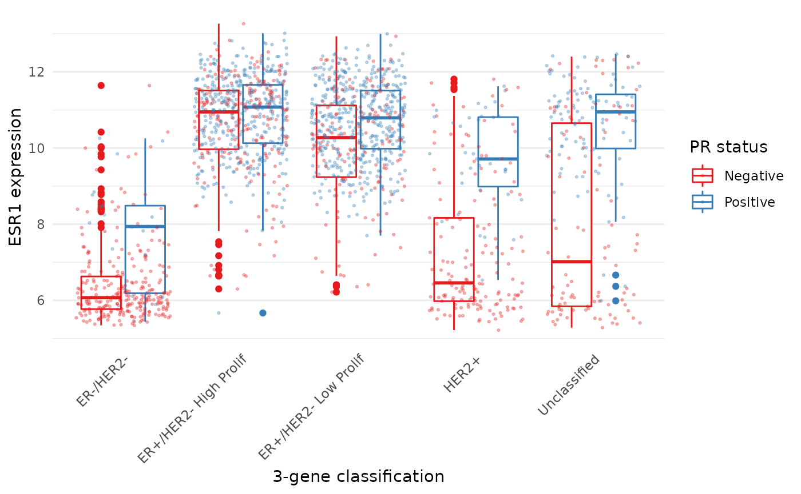

Learning objectives
- Use
group_by()withsummarise()to compute summary values for groups of observations- Use
count()to count the numbers of observations within categories- Combine data from two tables based on a common identifier (
joinoperations)- Understand what makes a data set ‘tidy’ and why you’d want your data to be structured this way
- Use
pivot_longer()andpivot_wider()operations to restructure data frames- Tease apart columns containing multiple variables using
separate()- Modify character variables using string manipulation functions from the stringr package
- Customize plots created using ggplot2 by changing labels, scales and colours and themes
A video that goes through this session’s material can be found here.
Grouping and combining data
In this session, we’ll look at some more useful functions provided by the dplyr package, the ‘workhorse’ in the tidyverse family for manipulating tabular data. Continuing from last week, we’ll see how we can summarise data for groups of observations within different categories. We’ll also show how dplyr allows us to combine data for the same observational unit, e.g. person or date, that comes from different sources and is read into R in different tables.
We’ll also look at how to customize the plots we create using ggplot2, in particular how we can add or change titles and labels, how we can adjust the way the axes are displayed and how we can use a colour scheme of our choosing.
dplyr and ggplot2 are core component packages within the tidyverse and both get loaded as part of the tidyverse.
## ── Attaching packages ─────────────────────────────────────── tidyverse 1.3.1 ──## ✔ ggplot2 3.3.6 ✔ purrr 0.3.4
## ✔ tibble 3.1.7 ✔ dplyr 1.0.9
## ✔ tidyr 1.2.0 ✔ stringr 1.4.0
## ✔ readr 2.1.2 ✔ forcats 0.5.1## ── Conflicts ────────────────────────────────────────── tidyverse_conflicts() ──
## ✖ dplyr::filter() masks stats::filter()
## ✖ dplyr::lag() masks stats::lag()To demonstrate how these grouping and combining functions work and to illustrate customization of plots, we’ll again use the METABRIC data set.
metabric <- read_csv("https://zenodo.org/record/6450144/files/metabric_clinical_and_expression_data.csv")
metabric## # A tibble: 1,904 × 32
## Patient_ID Cohort Age_at_diagnosis Survival_time Survival_status Vital_status
## <chr> <dbl> <dbl> <dbl> <chr> <chr>
## 1 MB-0000 1 75.6 140. LIVING Living
## 2 MB-0002 1 43.2 84.6 LIVING Living
## 3 MB-0005 1 48.9 164. DECEASED Died of Dis…
## 4 MB-0006 1 47.7 165. LIVING Living
## 5 MB-0008 1 77.0 41.4 DECEASED Died of Dis…
## 6 MB-0010 1 78.8 7.8 DECEASED Died of Dis…
## 7 MB-0014 1 56.4 164. LIVING Living
## 8 MB-0022 1 89.1 99.5 DECEASED Died of Oth…
## 9 MB-0028 1 86.4 36.6 DECEASED Died of Oth…
## 10 MB-0035 1 84.2 36.3 DECEASED Died of Dis…
## # … with 1,894 more rows, and 26 more variables: Chemotherapy <chr>,
## # Radiotherapy <chr>, Tumour_size <dbl>, Tumour_stage <dbl>,
## # Neoplasm_histologic_grade <dbl>, Lymph_nodes_examined_positive <dbl>,
## # Lymph_node_status <dbl>, Cancer_type <chr>, ER_status <chr>,
## # PR_status <chr>, HER2_status <chr>, HER2_status_measured_by_SNP6 <chr>,
## # PAM50 <chr>, `3-gene_classifier` <chr>, Nottingham_prognostic_index <dbl>,
## # Cellularity <chr>, Integrative_cluster <chr>, Mutation_count <dbl>, …Grouping observations
Summaries for groups
In the previous session we introduced the summarise()
function for computing a summary value for one or more variables from
all rows in a table (data frame or tibble). For example, we computed the
mean expression of ESR1, the estrogen receptor alpha gene, as
follows.
## # A tibble: 1 × 1
## `mean(ESR1)`
## <dbl>
## 1 9.61While the summarise() function is useful on its own, it
becomes really powerful when applied to groups of observations within a
dataset. For example, we might be more interested in the mean ESR1
expression calculated separately for ER positive and ER negative
tumours. We could take each group in turn, filter the data frame to
contain only the rows for a given ER status, then apply the
summarise() function to compute the mean expression, but
that would be somewhat cumbersome. Even more so if we chose to do this
for a categorical variable with more than two states, e.g. for each of
the integrative clusters. Fortunately, the
group_by() function allows this to be done
in one simple step.
## # A tibble: 2 × 2
## ER_status `mean(ESR1)`
## <chr> <dbl>
## 1 Negative 6.21
## 2 Positive 10.6We get an additional column in our output for the categorical
variable, ER_status, and a row for each category.
Incidentally, we should expect this result of ER-positive tumours having a higher expression of ESR1 on average than ER-negative tumours. Simple summaries like this are a good way of checking that what we think we know actually holds true in the data we’re looking at. Note that the expression values are on a log2scale so ER-positive breast cancers express ESR1 at a level that is approximately 20 times greater, on average, than that of ER-negative tumours.
2 ** (10.6 - 6.21) # equivalent to (2 ** 10.6) / (2 ** 6.21)## [1] 20.96629Let’s have a look at how ESR1 expression varies between the integrative cluster subtypes defined by the METABRIC study.
## # A tibble: 11 × 2
## Integrative_cluster ESR1
## <chr> <dbl>
## 1 1 10.3
## 2 10 6.39
## 3 2 10.9
## 4 3 10.5
## 5 4ER- 6.55
## 6 4ER+ 9.78
## 7 5 7.78
## 8 6 10.9
## 9 7 10.9
## 10 8 11.1
## 11 9 9.96The following schematic contains another example using a simplified subset of the METABRIC tumour samples to show what’s going on.

As we saw last session, we can summarize multiple observations,
e.g. the mean expression for other genes of interest, with
summarise() and across(), this time using the
PAM50 classification to define the groups.
## # A tibble: 7 × 4
## PAM50 ESR1 PGR ERBB2
## <chr> <dbl> <dbl> <dbl>
## 1 Basal 6.42 5.46 10.2
## 2 claudin-low 7.47 5.60 9.85
## 3 Her2 7.81 5.62 12.6
## 4 LumA 10.8 6.75 10.7
## 5 LumB 11.0 6.39 10.6
## 6 NC 10.9 6.47 10.3
## 7 Normal 9.50 6.21 10.8We can also refine our groups by using more than one categorical variable. Let’s subdivide the PAM50 groups by HER2 status to illustrate this.
## `summarise()` has grouped output by 'PAM50'. You can override using the
## `.groups` argument.## # A tibble: 13 × 3
## # Groups: PAM50 [7]
## PAM50 HER2_status ESR1_mean
## <chr> <chr> <dbl>
## 1 Basal Negative 6.39
## 2 Basal Positive 6.71
## 3 claudin-low Negative 7.52
## 4 claudin-low Positive 6.80
## 5 Her2 Negative 8.82
## 6 Her2 Positive 7.04
## 7 LumA Negative 10.8
## 8 LumA Positive 10.1
## 9 LumB Negative 11.1
## 10 LumB Positive 10.2
## 11 NC Negative 10.9
## 12 Normal Negative 9.68
## 13 Normal Positive 7.77It can be quite useful to know how many observations are within each
group. We can use a special function, n(),
that counts the number of rows rather than computing a summary value
from one of the columns.
## `summarise()` has grouped output by 'PAM50'. You can override using the
## `.groups` argument.## # A tibble: 13 × 4
## # Groups: PAM50 [7]
## PAM50 HER2_status N ESR1_mean
## <chr> <chr> <int> <dbl>
## 1 Basal Negative 179 6.39
## 2 Basal Positive 20 6.71
## 3 claudin-low Negative 184 7.52
## 4 claudin-low Positive 15 6.80
## 5 Her2 Negative 95 8.82
## 6 Her2 Positive 125 7.04
## 7 LumA Negative 658 10.8
## 8 LumA Positive 21 10.1
## 9 LumB Negative 419 11.1
## 10 LumB Positive 42 10.2
## 11 NC Negative 6 10.9
## 12 Normal Negative 127 9.68
## 13 Normal Positive 13 7.77Counts
Counting observations within groups is such a common operation that
dplyr provides a count() function to do
just that. So we could count the number of patient samples in each of
the PAM50 classes as follows.
count(metabric, PAM50)## # A tibble: 7 × 2
## PAM50 n
## <chr> <int>
## 1 Basal 199
## 2 claudin-low 199
## 3 Her2 220
## 4 LumA 679
## 5 LumB 461
## 6 NC 6
## 7 Normal 140This is much like the table() function we’ve used
several times already to take a quick look at what values are contained
in one of the columns in a data frame. They return different data
structures however, with count() always returning a data
frame (or tibble) that can then be passed to subsequent steps in a
‘piped’ workflow.
If we wanted to subdivide our categories by HER2 status, we can add
this as an additional categorical variable just as we did with the
previous group_by() examples.
count(metabric, PAM50, HER2_status)## # A tibble: 13 × 3
## PAM50 HER2_status n
## <chr> <chr> <int>
## 1 Basal Negative 179
## 2 Basal Positive 20
## 3 claudin-low Negative 184
## 4 claudin-low Positive 15
## 5 Her2 Negative 95
## 6 Her2 Positive 125
## 7 LumA Negative 658
## 8 LumA Positive 21
## 9 LumB Negative 419
## 10 LumB Positive 42
## 11 NC Negative 6
## 12 Normal Negative 127
## 13 Normal Positive 13The count column is named ‘n’ by default but you can change this.
count(metabric, PAM50, HER2_status, name = "Samples")## # A tibble: 13 × 3
## PAM50 HER2_status Samples
## <chr> <chr> <int>
## 1 Basal Negative 179
## 2 Basal Positive 20
## 3 claudin-low Negative 184
## 4 claudin-low Positive 15
## 5 Her2 Negative 95
## 6 Her2 Positive 125
## 7 LumA Negative 658
## 8 LumA Positive 21
## 9 LumB Negative 419
## 10 LumB Positive 42
## 11 NC Negative 6
## 12 Normal Negative 127
## 13 Normal Positive 13count() is equivalent to grouping observations with
group_by() and calling summarize() using the
special n() function to count the number of rows. So the
above statement could have been written in a more long-winded way as
follows.
Summarizing with n() is useful when showing the number
of observations in a group alongside a summary value, as we did earlier
looking at the mean ESR1 expression within specified groups; it allows
you to see if you’re drawing conclusions from only a few data
points.
Missing values
Many summarization functions return NA if any of the
values are missing, i.e. the column contains NA values. As
an example, we’ll compute the average size of ER-negative and
ER-positive tumours.
## # A tibble: 2 × 3
## ER_status N `Average tumour size`
## <chr> <int> <dbl>
## 1 Negative 445 NA
## 2 Positive 1459 NAThe mean() function, along with many similar
summarization functions, has an na.rm argument that can be
set to TRUE to exclude those missing values from the
calculation.
metabric %>%
group_by(ER_status) %>%
summarize(N = n(), `Average tumour size` = mean(Tumour_size, na.rm = TRUE))## # A tibble: 2 × 3
## ER_status N `Average tumour size`
## <chr> <int> <dbl>
## 1 Negative 445 28.5
## 2 Positive 1459 25.6An alternative would be to filter out the observations with missing values but then the number of samples in each ER status group would take on a different meaning, which may or may not be what we actually want.
metabric %>%
filter(!is.na(Tumour_size)) %>%
group_by(ER_status) %>%
summarize(N = n(), `Average tumour size` = mean(Tumour_size))## # A tibble: 2 × 3
## ER_status N `Average tumour size`
## <chr> <int> <dbl>
## 1 Negative 438 28.5
## 2 Positive 1446 25.6Counts and proportions
The sum() and mean() summarization
functions are often used with logical values. It might seem surprising
to compute a summary for a logical variable but but this turns out to be
quite a useful thing to do, for counting the number of TRUE
values or obtaining the proportion of values that are
TRUE.
Following on from the previous example we could add a column to our summary of average tumour size for ER-positive and ER-negative patients that contains the number of missing values.
metabric %>%
group_by(ER_status) %>%
summarize(N = n(), Missing = sum(is.na(Tumour_size)), `Average tumour size` = mean(Tumour_size, na.rm = TRUE))## # A tibble: 2 × 4
## ER_status N Missing `Average tumour size`
## <chr> <int> <int> <dbl>
## 1 Negative 445 7 28.5
## 2 Positive 1459 13 25.6Why does this work? Well, the is.na() function takes a
vector and sees which values are NA, returning a logical
vector of TRUE where the value was NA and
FALSE if not.
## [1] FALSE FALSE FALSE TRUE FALSE FALSE TRUE FALSEThe sum() function treats the logical vector as a set of
0s and 1s where FALSE is
0 and TRUE is 1. In effect
sum() counts the number of TRUE values.
## [1] 2Similarly, mean() will compute the proportion of the
values that are TRUE.
## [1] 0.25So let’s calculate the number and proportion of samples that do not have a recorded tumour size in each of the ER-negative and ER-positive groups.
metabric %>%
group_by(ER_status) %>%
summarize(N = n(), `Missing tumour size` = sum(is.na(Tumour_size)), `Proportion missing` = mean(is.na(Tumour_size)))## # A tibble: 2 × 4
## ER_status N `Missing tumour size` `Proportion missing`
## <chr> <int> <int> <dbl>
## 1 Negative 445 7 0.0157
## 2 Positive 1459 13 0.00891We can use sum() and mean() for any
condition that returns a logical vector. We could, for example, find the
number and proportion of patients that survived longer than 10 years
(120 months) in each of the ER-negative and ER-positive groups.
metabric %>%
filter(Survival_status == "DECEASED") %>%
group_by(ER_status) %>%
summarise(N = n(), N_long_survival = sum(Survival_time > 120), Proportion_long_survival = mean(Survival_time > 120))## # A tibble: 2 × 4
## ER_status N N_long_survival Proportion_long_survival
## <chr> <int> <int> <dbl>
## 1 Negative 250 40 0.16
## 2 Positive 853 325 0.381Selecting or counting distinct things
There are occasions when we want to count the number of distinct values in a variable or a combination of variables. In this week’s assignment, we introduce another set of data from the METABRIC study which contains details of the mutations detected by targeted sequencing of a panel of 173 genes. We’ll read this data into R now as this provides a good example of having multiple observations in different rows for a single observational unit, in this case several mutations detected in each tumour sample.
mutations <- read_csv("https://zenodo.org/record/6450144/files/metabric_mutations.csv")
select(mutations, Patient_ID, Chromosome, Position = Start_Position, Ref = Reference_Allele, Alt = Tumor_Seq_Allele1, Type = Variant_Type, Gene)## # A tibble: 17,272 × 7
## Patient_ID Chromosome Position Ref Alt Type Gene
## <chr> <chr> <dbl> <chr> <chr> <chr> <chr>
## 1 MTS-T0058 17 7579344 NA NA INS TP53
## 2 MTS-T0058 17 7579346 NA NA INS TP53
## 3 MTS-T0058 6 168299111 G G SNP MLLT4
## 4 MTS-T0058 22 29999995 G G SNP NF2
## 5 MTS-T0059 2 198288682 A A SNP SF3B1
## 6 MTS-T0059 6 86195125 T T SNP NT5E
## 7 MTS-T0059 7 55241717 C C SNP EGFR
## 8 MTS-T0059 10 6556986 C C SNP PRKCQ
## 9 MTS-T0059 11 62300529 T T SNP AHNAK
## 10 MTS-T0059 15 74912475 G G SNP CLK3
## # … with 17,262 more rowsWe can see from just these few rows that each patient sample has multiple mutations and sometimes there are more than one mutation in the same gene within a sample, as can be seen in the first two rows at the top of the table above.
If we want to count the number of patients in which mutations were
detected we could select the distinct set of patient identifiers using
the distinct() function.
## [1] 2369Similarly, we could select the distinct set of mutated genes for each patient as follows.
## # A tibble: 15,656 × 2
## Patient_ID Gene
## <chr> <chr>
## 1 MTS-T0058 TP53
## 2 MTS-T0058 MLLT4
## 3 MTS-T0058 NF2
## 4 MTS-T0059 SF3B1
## 5 MTS-T0059 NT5E
## 6 MTS-T0059 EGFR
## 7 MTS-T0059 PRKCQ
## 8 MTS-T0059 AHNAK
## 9 MTS-T0059 CLK3
## 10 MTS-T0059 TP53
## # … with 15,646 more rowsThis has reduced the number of rows as only distinct combinations of patient and gene are retained. This would be necessary if we wanted to count the number of patients that have mutations in each gene rather than the number of mutations for that gene regardless of the patient.
# number of mutations for each gene
count(mutations, Gene)## # A tibble: 173 × 2
## Gene n
## <chr> <int>
## 1 ACVRL1 20
## 2 AFF2 70
## 3 AGMO 43
## 4 AGTR2 14
## 5 AHNAK 327
## 6 AHNAK2 859
## 7 AKAP9 182
## 8 AKT1 115
## 9 AKT2 23
## 10 ALK 98
## # … with 163 more rows
# number of tumour samples in which each gene is mutated
mutations %>%
distinct(Patient_ID, Gene) %>%
count(Gene)## # A tibble: 173 × 2
## Gene n
## <chr> <int>
## 1 ACVRL1 20
## 2 AFF2 69
## 3 AGMO 43
## 4 AGTR2 14
## 5 AHNAK 272
## 6 AHNAK2 530
## 7 AKAP9 173
## 8 AKT1 115
## 9 AKT2 23
## 10 ALK 95
## # … with 163 more rowsThe genes that differ in these two tables are those that have more than one mutation within a patient tumour sample.
Joining data
In many real life situations, data are spread across multiple tables or spreadsheets. Usually this occurs because different types of information about a subject, e.g. a patient, are collected from different sources. It may be desirable for some analyses to combine data from two or more tables into a single data frame based on a common column, for example, an attribute that uniquely identifies the subject such as a patient identifier.
dplyr provides a set of join functions for combining two data frames based on matches within specified columns. These operations are very similar to carrying out join operations between tables in a relational database using SQL.
left_join
To illustrate join operations we’ll first consider the most common type, a “left join”. In the schematic below the two data frames share a common column, V1. We can combine the two data frames into a single data frame by matching rows in the first data frame with those in the second data frame that share the same value of variable V1.

dplyr left join
left_join() returns all rows from the first data frame
regardless of whether there is a match in the second data frame. Rows
with no match are included in the resulting data frame but have
NA values in the additional columns coming from the second
data frame.
Here’s an example in which details about members of the Beatles and Rolling Stones are contained in two tables, using data frames conveniently provided by dplyr (we’ll look at a real example shortly).
The name column identifies each of the band members and is used for matching rows from the two tables.
band_members## # A tibble: 3 × 2
## name band
## <chr> <chr>
## 1 Mick Stones
## 2 John Beatles
## 3 Paul Beatles
band_instruments## # A tibble: 3 × 2
## name plays
## <chr> <chr>
## 1 John guitar
## 2 Paul bass
## 3 Keith guitar
left_join(band_members, band_instruments, by = "name")## # A tibble: 3 × 3
## name band plays
## <chr> <chr> <chr>
## 1 Mick Stones NA
## 2 John Beatles guitar
## 3 Paul Beatles bassWe have joined the band members and instruments tables based on the
common name column. Because this is a left join, only
observations for band members in the ‘left’ table
(band_members) are included with information brought in
from the ‘right’ table (band_instruments) where such
exists. There is no entry in band_instruments for Mick so
an NA value is inserted into the plays column
that gets added in the combined data frame. Keith is only included in
the band_instruments data frame so doesn’t make it into the
final output as this is based on those band members in the ‘left’
table.
right_join() is similar but returns all rows from the
second data frame, i.e. the ‘right’ data frame, that have a match with
rows in the first data frame.
right_join(band_members, band_instruments, by = "name")## # A tibble: 3 × 3
## name band plays
## <chr> <chr> <chr>
## 1 John Beatles guitar
## 2 Paul Beatles bass
## 3 Keith NA guitarright_join() is used very infrequently compared with
left_join().
inner_join
Another joining operation is the “inner join” in which only observations that are common to both data frames are included.

dplyr inner join
inner_join(band_members, band_instruments, by = "name")## # A tibble: 2 × 3
## name band plays
## <chr> <chr> <chr>
## 1 John Beatles guitar
## 2 Paul Beatles bassIn this case when considering observations identified by
name, only John and Paul are contained in both the
band_members and band_instruments tables, so
only these make it into the combined table.
full_join
We’ve seen how missing rows from one table can be retained in the
joined data frame using left_join or
right_join but sometimes data for a given subject may be
missing from either of the tables and we still want that subject to
appear in the combined table. A full_join will return all
rows and all columns from the two tables and where there are no matching
values, NA values are used to fill in the missing
values.

dplyr full join
full_join(band_members, band_instruments, by = "name")## # A tibble: 4 × 3
## name band plays
## <chr> <chr> <chr>
## 1 Mick Stones NA
## 2 John Beatles guitar
## 3 Paul Beatles bass
## 4 Keith NA guitarNow, with full_join(), we have rows for both Mick and
Keith even though they are only in one or other of the tables being
joined.
Joining on columns with different headers
It isn’t uncommon for the columns used for joining two tables to have
different names in each table. Of course we could rename one of the two
columns, e.g. using the dplyr rename() function, but the
dplyr join functions allow you to match using differently-named columns
as illustrated using another version of the
band_instruments data frame.
band_instruments2## # A tibble: 3 × 2
## artist plays
## <chr> <chr>
## 1 John guitar
## 2 Paul bass
## 3 Keith guitar## # A tibble: 3 × 3
## name band plays
## <chr> <chr> <chr>
## 1 Mick Stones NA
## 2 John Beatles guitar
## 3 Paul Beatles bassThe name for the column used for joining is the one given in the
first table, i.e. the ‘left’ table, so name rather than
artist in this case.
Multiple matches in join operations
You may be wondering what happens if there are multiple rows in one of both of the two tables for the thing that is being joined, for example what would happen if our second table had two entries for instruments that Paul plays.
band_instruments3 <- tibble(
name = c("John", "Paul", "Paul", "Keith"),
plays = c("guitar", "bass", "guitar", "guitar")
)
band_instruments3## # A tibble: 4 × 2
## name plays
## <chr> <chr>
## 1 John guitar
## 2 Paul bass
## 3 Paul guitar
## 4 Keith guitar
left_join(band_members, band_instruments3, by = "name")## # A tibble: 4 × 3
## name band plays
## <chr> <chr> <chr>
## 1 Mick Stones NA
## 2 John Beatles guitar
## 3 Paul Beatles bass
## 4 Paul Beatles guitarWe get both entries from the second table added to the first table.
Let’s add an entry for Paul being in a second band and see what happens then when we combine the two tables, each with two entries for Paul.
band_members3 <- tibble(
name = c("Mick", "John", "Paul", "Paul"),
band = c("Stones", "Beatles", "Beatles", "Wings")
)
band_members3## # A tibble: 4 × 2
## name band
## <chr> <chr>
## 1 Mick Stones
## 2 John Beatles
## 3 Paul Beatles
## 4 Paul Wings
left_join(band_members3, band_instruments3, by = "name")## # A tibble: 6 × 3
## name band plays
## <chr> <chr> <chr>
## 1 Mick Stones NA
## 2 John Beatles guitar
## 3 Paul Beatles bass
## 4 Paul Beatles guitar
## 5 Paul Wings bass
## 6 Paul Wings guitarThe resulting table includes all combinations of band and instrument for Paul.
Joining by matching on multiple columns
Sometimes the observations being combined are identified by multiple columns, for example, a forename and a surname. We can specify a vector of column names to be used in the join operation.
band_members4 <- tibble(
forename = c("Mick", "John", "Paul", "Mick", "John"),
surname = c("Jagger", "Lennon", "McCartney", "Avory", "Squire"),
band = c("Stones", "Beatles", "Beatles", "Kinks", "Roses")
)
band_instruments4 <- tibble(
forename = c("John", "Paul", "Keith", "Mick", "John"),
surname = c("Lennon", "McCartney", "Richards", "Avory", "Squire"),
plays = c("guitar", "bass", "guitar", "drums", "guitar")
)
full_join(band_members4, band_instruments4, by = c("forename", "surname"))## # A tibble: 6 × 4
## forename surname band plays
## <chr> <chr> <chr> <chr>
## 1 Mick Jagger Stones NA
## 2 John Lennon Beatles guitar
## 3 Paul McCartney Beatles bass
## 4 Mick Avory Kinks drums
## 5 John Squire Roses guitar
## 6 Keith Richards NA guitarClashing column names
Occasionally we may find that there are duplicated columns in the two tables we want to join, columns that aren’t those used for joining. These variables may even contain different data but happen to have the same name. In such cases dplyr joins add a suffix to each column in the combined table.
band_members5 <- tibble(
name = c("John", "Paul", "Ringo", "George", "Mick"),
birth_year = c(1940, 1942, 1940, 1943, 1943),
band = c("Beatles", "Beatles", "Beatles", "Beatles", "Stones")
)
band_instruments5 <- tibble(
name = c("John", "Paul", "Ringo", "George"),
birth_year = c(1940, 1942, 1940, 1943),
instrument = c("guitar", "bass", "drums", "guitar")
)
left_join(band_members5, band_instruments5, by = "name")## # A tibble: 5 × 5
## name birth_year.x band birth_year.y instrument
## <chr> <dbl> <chr> <dbl> <chr>
## 1 John 1940 Beatles 1940 guitar
## 2 Paul 1942 Beatles 1942 bass
## 3 Ringo 1940 Beatles 1940 drums
## 4 George 1943 Beatles 1943 guitar
## 5 Mick 1943 Stones NA NAIt is advisable to rename or remove the duplicated columns that aren’t used for joining.
Filtering joins
A variation on the join operations we’ve considered are
semi_join() and anti_join() that filter the
rows in one table based on matches or lack of matches to rows in another
table.
semi_join() returns all rows from the first table where
there are matches in the other table.
semi_join(band_members, band_instruments, by = "name")## # A tibble: 2 × 2
## name band
## <chr> <chr>
## 1 John Beatles
## 2 Paul Beatlesanti_join() returns all rows where there is no match in
the other table, i.e. those that are unique to the first table.
anti_join(band_members, band_instruments, by = "name")## # A tibble: 1 × 2
## name band
## <chr> <chr>
## 1 Mick StonesA real example: joining the METABRIC clinical and mRNA expression data
Let’s move on to a real example of joining data from two different tables that we used in putting together the combined METABRIC clinical and expression data set.
We first read the clinical data into R and then just select a small number of columns to make it easier to see what is going on when combining the data.
clinical_data <- read_csv("https://zenodo.org/record/6450144/files/metabric_clinical_data.csv")
clinical_data <- select(clinical_data, Patient_ID, ER_status, PAM50)
clinical_data## # A tibble: 2,509 × 3
## Patient_ID ER_status PAM50
## <chr> <chr> <chr>
## 1 MB-0000 Positive claudin-low
## 2 MB-0002 Positive LumA
## 3 MB-0005 Positive LumB
## 4 MB-0006 Positive LumB
## 5 MB-0008 Positive LumB
## 6 MB-0010 Positive LumB
## 7 MB-0014 Positive LumB
## 8 MB-0020 Negative Normal
## 9 MB-0022 Positive claudin-low
## 10 MB-0025 Positive NA
## # … with 2,499 more rowsWe then read in the mRNA expression data that was downloaded separately from cBioPortal.
mrna_expression_data <- read_tsv("https://zenodo.org/record/6450144/files/metabric_mrna_expression.txt")
mrna_expression_data## # A tibble: 2,509 × 10
## STUDY_ID SAMPLE_ID ESR1 ERBB2 PGR TP53 PIK3CA GATA3 FOXA1 MLPH
## <chr> <chr> <dbl> <dbl> <dbl> <dbl> <dbl> <dbl> <dbl> <dbl>
## 1 brca_metabric MB-0000 8.93 9.33 5.68 6.34 5.70 6.93 7.95 9.73
## 2 brca_metabric MB-0002 10.0 9.73 7.51 6.19 5.76 11.3 11.8 12.5
## 3 brca_metabric MB-0005 10.0 9.73 7.38 6.40 6.75 9.29 11.7 10.3
## 4 brca_metabric MB-0006 10.4 10.3 6.82 6.87 7.22 8.67 11.9 10.5
## 5 brca_metabric MB-0008 11.3 9.96 7.33 6.34 5.82 9.72 11.6 12.2
## 6 brca_metabric MB-0010 11.2 9.74 5.95 5.42 6.12 9.79 12.1 11.4
## 7 brca_metabric MB-0014 10.8 9.28 7.72 5.99 7.48 8.37 11.5 10.8
## 8 brca_metabric MB-0020 NA NA NA NA NA NA NA NA
## 9 brca_metabric MB-0022 10.4 8.61 5.59 6.17 7.59 7.87 10.7 9.95
## 10 brca_metabric MB-0025 NA NA NA NA NA NA NA NA
## # … with 2,499 more rowsNow we have both sets of data loaded into R as data frames, we can
combine them into a single data frame using an
inner_join(). Our resulting table will only contain entries
for the patients for which expression data are available.
combined_data <- inner_join(clinical_data, mrna_expression_data, by = c("Patient_ID" = "SAMPLE_ID"))
combined_data## # A tibble: 2,509 × 12
## Patient_ID ER_status PAM50 STUDY_ID ESR1 ERBB2 PGR TP53 PIK3CA GATA3
## <chr> <chr> <chr> <chr> <dbl> <dbl> <dbl> <dbl> <dbl> <dbl>
## 1 MB-0000 Positive claudin-l… brca_me… 8.93 9.33 5.68 6.34 5.70 6.93
## 2 MB-0002 Positive LumA brca_me… 10.0 9.73 7.51 6.19 5.76 11.3
## 3 MB-0005 Positive LumB brca_me… 10.0 9.73 7.38 6.40 6.75 9.29
## 4 MB-0006 Positive LumB brca_me… 10.4 10.3 6.82 6.87 7.22 8.67
## 5 MB-0008 Positive LumB brca_me… 11.3 9.96 7.33 6.34 5.82 9.72
## 6 MB-0010 Positive LumB brca_me… 11.2 9.74 5.95 5.42 6.12 9.79
## 7 MB-0014 Positive LumB brca_me… 10.8 9.28 7.72 5.99 7.48 8.37
## 8 MB-0020 Negative Normal brca_me… NA NA NA NA NA NA
## 9 MB-0022 Positive claudin-l… brca_me… 10.4 8.61 5.59 6.17 7.59 7.87
## 10 MB-0025 Positive NA brca_me… NA NA NA NA NA NA
## # … with 2,499 more rows, and 2 more variables: FOXA1 <dbl>, MLPH <dbl>Having combined the data, we can carry out exploratory data analysis using elements from both data sets.
combined_data %>%
filter(!is.na(PAM50), !is.na(ESR1)) %>%
ggplot(mapping = aes(x = PAM50, y = ESR1, colour = PAM50)) +
geom_boxplot(show.legend = FALSE)
Restructuring data
The data you collect or obtain from a third party is not always in a form that is suitable for exploratory analysis and visualization and may need to be restructured before you can fully make use of it.
This is particularly true of the plotting and summarizing tools we’ve been looking at in this course, which are designed specifically to work on data in a format referred to as ‘tidy’. This is where the tidyverse gets its name.
In this part of the session, we will look at what it means for data to be ‘tidy’ and how you can transform your data, if necessary, into this form. We’ll also look at useful functions for handling compound variables, that is columns that contain more than one type of measurement or attribute (you’d be surprised how common this is) and some of the string manipulation functions from the stringr package that can help with cleaning up values within a data frame.
Finally, we’ll take another look at customizing plots created with ggplot2 by changing various non-data components that are largely cosmetic.
The functions we’re mostly focusing on in this part are from the tidyr and stringr packages both of which get loaded as part of the tidyverse.
Tidy data
So what is ‘tidy data’ and why should we care about it?
To answer these questions, we’ll look at different ways in which a simple data set can be represented and consider the challenges associated with each. The data set in question is a subset of data from the World Health Organization Global Tuberculosis Report.
The tidyr package contains a series of tibbles that represent the same set of information on the number of new cases of tuberculosis (TB) recorded in each of 3 countries in the years 1999 and 2000 as well as the populations of those countries.
Here is the first table, table1, that contains a row for
every combination of country and year and separate columns containing
the numbers of TB cases and the population.
table1## # A tibble: 6 × 4
## country year cases population
## <chr> <int> <int> <int>
## 1 Afghanistan 1999 745 19987071
## 2 Afghanistan 2000 2666 20595360
## 3 Brazil 1999 37737 172006362
## 4 Brazil 2000 80488 174504898
## 5 China 1999 212258 1272915272
## 6 China 2000 213766 1280428583Two alternative ways of representing the same information are given
in table2 and table3. We’ll consider each of
these in turn, shortly.
table2## # A tibble: 12 × 4
## country year type count
## <chr> <int> <chr> <int>
## 1 Afghanistan 1999 cases 745
## 2 Afghanistan 1999 population 19987071
## 3 Afghanistan 2000 cases 2666
## 4 Afghanistan 2000 population 20595360
## 5 Brazil 1999 cases 37737
## 6 Brazil 1999 population 172006362
## 7 Brazil 2000 cases 80488
## 8 Brazil 2000 population 174504898
## 9 China 1999 cases 212258
## 10 China 1999 population 1272915272
## 11 China 2000 cases 213766
## 12 China 2000 population 1280428583
table3## # A tibble: 6 × 3
## country year rate
## * <chr> <int> <chr>
## 1 Afghanistan 1999 745/19987071
## 2 Afghanistan 2000 2666/20595360
## 3 Brazil 1999 37737/172006362
## 4 Brazil 2000 80488/174504898
## 5 China 1999 212258/1272915272
## 6 China 2000 213766/1280428583The final representation has the data split across two tables, a scenario that is actually quite likely given that population data will almost certainly have been collected separately from the recording of TB cases.
table4a## # A tibble: 3 × 3
## country `1999` `2000`
## * <chr> <int> <int>
## 1 Afghanistan 745 2666
## 2 Brazil 37737 80488
## 3 China 212258 213766
table4b## # A tibble: 3 × 3
## country `1999` `2000`
## * <chr> <int> <int>
## 1 Afghanistan 19987071 20595360
## 2 Brazil 172006362 174504898
## 3 China 1272915272 1280428583Time series data like this are very commonly represented as they are
in table4a and table4b with a series of dates
or years as columns extending across a spreadsheet. You will find
numerous examples of this if you seek out various data sets made
available by the UK Office for National Statistics and various other
national and international organizations.
Tables 1 to 4 are all different representations of the same underlying data but one of these tables is structured in such a way as to be most readily used in the tidyverse.
Rules for tidy data
Tidy data
A tidy data set is a data frame (or table) for which the following are true:
- Each variable has its own column
- Each observation has its own row
- Each value has its own cell

A variable contains all values that measure the same underlying attribute (like height, temperature, duration) across units.
An observation contains all values measured on the same unit (like a person or a day) across attributes.
From ‘Tidy Data’ by Hadley Wickham.
Question: Which of the above representations of TB cases is tidy?
Another way of framing the question is to consider what are the variables in the TB data set, i.e. what are the things that vary and for which we can attach a value for each observation?
Take another look at tables 4a and 4b. Do each of the columns correspond to a variable? The country is certainly a variable. In this data set it takes one of three values: Afghanistan, Brazil or China.
But what about the other two columns, ‘1999’ and ‘2000’? These are values, not variables. The variable in this case would be ‘year’ and could take a value of 1999 or 2000. Tables 4a and 4b are not tidy.
There is also another rather obvious problem with tables 4a and 4b – the data are contained in two separate data frames. The data would almost certainly have been collected separately, so it’s hardly surprising, but whenever numbers of people affected by a disease, or engaging in an activity, are compared between countries we almost always want to be comparing the rate (the percentage within the population) and not the absolute number, so that the comparison is fair. We need to combine the data from these two tables in order to calculate the rate.
The only table that is truly tidy is table1. It contains
one column for each of the variables in the data set, namely country,
year, the number of new TB cases and the population. We’ll look at
tables 2 and 3 shortly and why these aren’t tidy and what we can do
about it, but first we’ll see how we can convert tables 4a and 4b into
the tidy format.
Pivoting operations
pivot_longer()
Tables 4a and 4b are examples of what is often referred to as ‘wide format’. While neither table looks especially wide, you can imagine that the more complete WHO data set contains data for very many years and that if each had its own column, the table would be very much wider.
What we need is a column for ‘year’ so that we have a count, whether
it is the number of TB cases or the population, for each unique
combination of country and year. Transforming the table in this way is
known as ‘pivoting’ and the tidyr package provides the
pivot_longer() function for just such an operation.
table4a## # A tibble: 3 × 3
## country `1999` `2000`
## * <chr> <int> <int>
## 1 Afghanistan 745 2666
## 2 Brazil 37737 80488
## 3 China 212258 213766
table4a_long <- pivot_longer(table4a, c(`1999`, `2000`), names_to = "year", values_to = "cases")
table4a_long## # A tibble: 6 × 3
## country year cases
## <chr> <chr> <int>
## 1 Afghanistan 1999 745
## 2 Afghanistan 2000 2666
## 3 Brazil 1999 37737
## 4 Brazil 2000 80488
## 5 China 1999 212258
## 6 China 2000 213766As with almost all tidyverse operations the first argument is the
data frame we’re working on. The second specifies which columns we are
operating on. Here we’ve used a vector with c() but it is
also quite customary and normally more convenient to use a range of
columns, e.g. `1999`:`2000`. Remember that we have to use
backticks because R doesn’t like variable names starting with
numbers.
Pivoting operations
pivot_longer(data, cols, names_to = “name”, values_to =
“value”)
Pivot data from wide to long, increasing the number of rows and decreasing the number of columns.
table4a_long <- pivot_longer(table4a, c(“1999”, “2000”),
names_to = “year”, values_to = “cases”)

pivot_wider(data, names_from = name, values_from =
value)
Pivot data from long to wide, increasing the number of columns and decreasing the number of rows.
table4a_wide <- pivot_wider(table4a_long, names_from = year,
values_from = cases)
The names_to and values_to arguments are so
called because we are taking the names of the columns we specified (1999
and 2000) and putting these in a new column with a name given by
names_to. Likewise, we are taking values in each of our
specified columns and putting these in a new column whose name is given
by values_to.
We can do the same with table4b and join the two
resulting tables together to recreate table1.
table4b_long <- pivot_longer(table4b, c(`1999`, `2000`), names_to = "year", values_to = "population")
table4b_long## # A tibble: 6 × 3
## country year population
## <chr> <chr> <int>
## 1 Afghanistan 1999 19987071
## 2 Afghanistan 2000 20595360
## 3 Brazil 1999 172006362
## 4 Brazil 2000 174504898
## 5 China 1999 1272915272
## 6 China 2000 1280428583
# join the two pivoted tables to recreate table1
left_join(table4a_long, table4b_long, by = c("country", "year"))## # A tibble: 6 × 4
## country year cases population
## <chr> <chr> <int> <int>
## 1 Afghanistan 1999 745 19987071
## 2 Afghanistan 2000 2666 20595360
## 3 Brazil 1999 37737 172006362
## 4 Brazil 2000 80488 174504898
## 5 China 1999 212258 1272915272
## 6 China 2000 213766 1280428583
pivot_wider()
pivot_wider() has the opposite effect of
pivot_longer() and can be used to reverse the pivoting
operation we just performed on table4a.
table4a_long## # A tibble: 6 × 3
## country year cases
## <chr> <chr> <int>
## 1 Afghanistan 1999 745
## 2 Afghanistan 2000 2666
## 3 Brazil 1999 37737
## 4 Brazil 2000 80488
## 5 China 1999 212258
## 6 China 2000 213766
pivot_wider(table4a_long, names_from = "year", values_from = "cases")## # A tibble: 3 × 3
## country `1999` `2000`
## <chr> <int> <int>
## 1 Afghanistan 745 2666
## 2 Brazil 37737 80488
## 3 China 212258 213766pivot_wider() has looked for all distinct values in the
year column and created a new column for each. The values
are taken from the cases column. An NA would
be inserted into the new columns for any instances where there is no
observation for a given year. That isn’t the case in this example but we
can show this by removing the last row from
table4a_long.
table4a_long <- head(table4a_long, 5)
table4a_long## # A tibble: 5 × 3
## country year cases
## <chr> <chr> <int>
## 1 Afghanistan 1999 745
## 2 Afghanistan 2000 2666
## 3 Brazil 1999 37737
## 4 Brazil 2000 80488
## 5 China 1999 212258
pivot_wider(table4a_long, names_from = "year", values_from = "cases")## # A tibble: 3 × 3
## country `1999` `2000`
## <chr> <int> <int>
## 1 Afghanistan 745 2666
## 2 Brazil 37737 80488
## 3 China 212258 NAIn some cases the wide format is the more human-readable form and
usually it is a more compact way of representing the data. In this
example, there is no duplication of the year value in the wide format of
table4a and table4b. We will see later that
this is much more apparent with larger data tables, e.g. gene expression
matrices.
Let’s look again at table2.
table2## # A tibble: 12 × 4
## country year type count
## <chr> <int> <chr> <int>
## 1 Afghanistan 1999 cases 745
## 2 Afghanistan 1999 population 19987071
## 3 Afghanistan 2000 cases 2666
## 4 Afghanistan 2000 population 20595360
## 5 Brazil 1999 cases 37737
## 6 Brazil 1999 population 172006362
## 7 Brazil 2000 cases 80488
## 8 Brazil 2000 population 174504898
## 9 China 1999 cases 212258
## 10 China 1999 population 1272915272
## 11 China 2000 cases 213766
## 12 China 2000 population 1280428583Are the type and count columns true variables? And what is the observational unit in this case?
If we consider the observational unit to be a country in a specific
year then table2 is not tidy because observations are split
across two rows. Also the count variable contains counts of what are
essentially different things, the number of cases of TB or the total
population.
In tricky situations like this, a tell-tale sign that the data is not in a tidy format is when we attempt to perform some exploratory data analysis and visualization and find we’re having to do quite a bit of work to calculate or plot what we want.
For example, if we wanted to create a bar plot of the numbers of TB cases in each country, we would have to first remove the rows corresponding to the populations using a filter operation. Surely that wouldn’t be necessary if the data were tidy.
Similarly, the rate of new TB cases, i.e. the proportion of the
population infected with TB, is something we should be able to calculate
easily in a simple operation. However, this is actually quite difficult
to do with the data structured as they are in table2.
We can use pivot_wider() to sort this out. The
type column contains the variable names so we’d need to set
names_from = "type", while the values will be taken from
the count column.
table2_fixed <- pivot_wider(table2, names_from = "type", values_from = "count")
table2_fixed## # A tibble: 6 × 4
## country year cases population
## <chr> <int> <int> <int>
## 1 Afghanistan 1999 745 19987071
## 2 Afghanistan 2000 2666 20595360
## 3 Brazil 1999 37737 172006362
## 4 Brazil 2000 80488 174504898
## 5 China 1999 212258 1272915272
## 6 China 2000 213766 1280428583The resulting table is exactly the same as table1 and
now the rate of infection can be calculated rather
straightforwardly.
mutate(table2_fixed, rate = cases / population)## # A tibble: 6 × 5
## country year cases population rate
## <chr> <int> <int> <int> <dbl>
## 1 Afghanistan 1999 745 19987071 0.0000373
## 2 Afghanistan 2000 2666 20595360 0.000129
## 3 Brazil 1999 37737 172006362 0.000219
## 4 Brazil 2000 80488 174504898 0.000461
## 5 China 1999 212258 1272915272 0.000167
## 6 China 2000 213766 1280428583 0.000167Splitting columns
Table 3 contains an example of a column that contains multiple values. It is a somewhat convoluted example but occasionally you may come across data like this.
table3## # A tibble: 6 × 3
## country year rate
## * <chr> <int> <chr>
## 1 Afghanistan 1999 745/19987071
## 2 Afghanistan 2000 2666/20595360
## 3 Brazil 1999 37737/172006362
## 4 Brazil 2000 80488/174504898
## 5 China 1999 212258/1272915272
## 6 China 2000 213766/1280428583The rate column contains both the number of TB cases and
the population separated by a ‘/’ character. The rate column is a
character type so not terribly useful for doing anything of a
mathematical nature in its current guise.
separate()
The separate() function allows us to split a character
column into multiple columns based on a delimiter or separator.
table3_separated <- separate(table3, rate, into = c("cases", "population"), sep = "/")
table3_separated## # A tibble: 6 × 4
## country year cases population
## <chr> <int> <chr> <chr>
## 1 Afghanistan 1999 745 19987071
## 2 Afghanistan 2000 2666 20595360
## 3 Brazil 1999 37737 172006362
## 4 Brazil 2000 80488 174504898
## 5 China 1999 212258 1272915272
## 6 China 2000 213766 1280428583The sep argument takes a regular expression that defines
how to split the values. We’ve mentioned regular expressions before –
they are a language for specifying search patterns used to find
sequences of characters within text and well worth learning. In this
case our separator is just the ‘/’ character.
The resulting data frame is still not quite what we want though. This
becomes apparent as soon as we try to do anything with the new
cases and population columns.
mutate(table3_separated, rate = cases / population)## Error in `mutate()`:
## ! Problem while computing `rate = cases/population`.
## Caused by error in `cases / population`:
## ! non-numeric argument to binary operatorBy default the separated values are character types. We could convert
these using mutate with across.
## # A tibble: 6 × 4
## country year cases population
## <chr> <int> <int> <int>
## 1 Afghanistan 1999 745 19987071
## 2 Afghanistan 2000 2666 20595360
## 3 Brazil 1999 37737 172006362
## 4 Brazil 2000 80488 174504898
## 5 China 1999 212258 1272915272
## 6 China 2000 213766 1280428583But another option is to specify convert = TRUE when
carrying out the separate() operation, in which case it
will deduce the type of the values and convert the column
accordingly.
table3_separated <- separate(table3, rate, into = c("cases", "population"), sep = "/", convert = TRUE)
mutate(table3_separated, rate = cases / population)## # A tibble: 6 × 5
## country year cases population rate
## <chr> <int> <int> <int> <dbl>
## 1 Afghanistan 1999 745 19987071 0.0000373
## 2 Afghanistan 2000 2666 20595360 0.000129
## 3 Brazil 1999 37737 172006362 0.000219
## 4 Brazil 2000 80488 174504898 0.000461
## 5 China 1999 212258 1272915272 0.000167
## 6 China 2000 213766 1280428583 0.000167Example 1: METABRIC gene expression
Although tables 1 to 4 contain real data they are, of course, ‘toy’ data frames created for demonstration and teaching purposes. We’ll now turn our attention to the METABRIC expression data and see how this needs to be transformed into a tidier format to open up different avenues for exploring the data.
We’ll first load the table and then select just the columns we’re going to need.
metabric_selected <- read_csv("https://zenodo.org/record/6450144/files/metabric_clinical_and_expression_data.csv") %>%
select(Patient_ID, ER_status, ESR1:MLPH)
metabric_selected## # A tibble: 1,904 × 10
## Patient_ID ER_status ESR1 ERBB2 PGR TP53 PIK3CA GATA3 FOXA1 MLPH
## <chr> <chr> <dbl> <dbl> <dbl> <dbl> <dbl> <dbl> <dbl> <dbl>
## 1 MB-0000 Positive 8.93 9.33 5.68 6.34 5.70 6.93 7.95 9.73
## 2 MB-0002 Positive 10.0 9.73 7.51 6.19 5.76 11.3 11.8 12.5
## 3 MB-0005 Positive 10.0 9.73 7.38 6.40 6.75 9.29 11.7 10.3
## 4 MB-0006 Positive 10.4 10.3 6.82 6.87 7.22 8.67 11.9 10.5
## 5 MB-0008 Positive 11.3 9.96 7.33 6.34 5.82 9.72 11.6 12.2
## 6 MB-0010 Positive 11.2 9.74 5.95 5.42 6.12 9.79 12.1 11.4
## 7 MB-0014 Positive 10.8 9.28 7.72 5.99 7.48 8.37 11.5 10.8
## 8 MB-0022 Positive 10.4 8.61 5.59 6.17 7.59 7.87 10.7 9.95
## 9 MB-0028 Positive 12.5 10.7 5.33 6.22 6.25 10.3 12.1 10.9
## 10 MB-0035 Positive 7.54 11.5 5.59 6.41 5.99 10.2 12.8 13.5
## # … with 1,894 more rowsWhen we first looked at visualization using ggplot2 we created the following box plot.
ggplot(metabric_selected) +
geom_boxplot(mapping = aes(x = ER_status, y = GATA3))
But what if we would like to create a series of plots using the faceting functions in ggplot2 with one plot for each gene?
Faceting requires a categorical variable, which is used to divide the data into subsets to be used for each plot. In this case we’d need a gene column. Clearly our data are not structured in this way.
We have gene names for column headings. Are these variables? Well, maybe, although a more correct name for each of these variables or column headings would be ‘Expression of ESR1’, ‘Expression of ERBB2’, etc.
But we could consider that these gene column headings are actually values of a variable called ‘gene’ or ‘gene symbol’. In this regard, what we have is a ‘wide format’ table.
Most gene expression matrices have a similar form, although usually there have rows for each gene and columns for each sample. It should be said that the gene expression matrix format is a very compact way of representing the data which could be a consideration when dealing with tens of thousands of genes and anywhere between a few tens of samples to a few thousand, such is the case for METABRIC.
Furthermore, there are lots of tools for working with gene expression
data in the form of matrices, including many packages in the
Bioconductor project. Fortunately, as we’ve seen,
pivot_longer() and pivot_wider() provide a
very convenient means of converting between tidy and matrix-like
formats.
We’ll convert our table of ER status and gene expression data to the tidy format.
metabric_long <- pivot_longer(metabric_selected, ESR1:MLPH, names_to = "Gene", values_to = "Expression")
metabric## # A tibble: 1,904 × 32
## Patient_ID Cohort Age_at_diagnosis Survival_time Survival_status Vital_status
## <chr> <dbl> <dbl> <dbl> <chr> <chr>
## 1 MB-0000 1 75.6 140. LIVING Living
## 2 MB-0002 1 43.2 84.6 LIVING Living
## 3 MB-0005 1 48.9 164. DECEASED Died of Dis…
## 4 MB-0006 1 47.7 165. LIVING Living
## 5 MB-0008 1 77.0 41.4 DECEASED Died of Dis…
## 6 MB-0010 1 78.8 7.8 DECEASED Died of Dis…
## 7 MB-0014 1 56.4 164. LIVING Living
## 8 MB-0022 1 89.1 99.5 DECEASED Died of Oth…
## 9 MB-0028 1 86.4 36.6 DECEASED Died of Oth…
## 10 MB-0035 1 84.2 36.3 DECEASED Died of Dis…
## # … with 1,894 more rows, and 26 more variables: Chemotherapy <chr>,
## # Radiotherapy <chr>, Tumour_size <dbl>, Tumour_stage <dbl>,
## # Neoplasm_histologic_grade <dbl>, Lymph_nodes_examined_positive <dbl>,
## # Lymph_node_status <dbl>, Cancer_type <chr>, ER_status <chr>,
## # PR_status <chr>, HER2_status <chr>, HER2_status_measured_by_SNP6 <chr>,
## # PAM50 <chr>, `3-gene_classifier` <chr>, Nottingham_prognostic_index <dbl>,
## # Cellularity <chr>, Integrative_cluster <chr>, Mutation_count <dbl>, …Note how we specified a range of columns between ESR1
and MLPH, which is a lot easier than naming each column
individually.
We’re now in a position to create our faceted box plot chart.
ggplot(data = metabric_long) +
geom_boxplot(mapping = aes(x = ER_status, y = Expression)) +
facet_wrap(vars(Gene))
In carrying out this transformation, the observational unit has
changed. The tidy format has one-row-per-gene-per-sample, while
wide format was one-row-per-sample. The tidy format is much
less compact and involves considerable duplication of values in the
first three columns (Patient_ID, ER_status and
Gene).
One of the other plot types we’ve used in exploring these data was a scatter plot comparing the expression of two genes across all the samples. For this, the one-row-per-sample representation is the more appropriate and being able to convert back to this format allows us to create the plot.
metabric_long %>%
pivot_wider(names_from = "Gene", values_from = "Expression") %>%
ggplot() +
geom_point(mapping = aes(x = GATA3, y = ESR1, colour = ER_status))
Example 2: Protein levels in MCF-7 after treatment with tamoxifen
Our second real example features another data set generated by CRUK CI scientists (Papachristou et al., Nature Communications 9:2311, 2018) in which the dynamics of endogenous chromatin-associated protein complexes were investigated using quantitative mass spectrometry.
We’ll look at just one of several tabular data sets made available as supplementary data, which contains the total level of protein in MCF-7 cells at various time points after treatment with the drug tamoxifen. MCF-7 is a breast cancer cell line isolated in 1970 from a 69-year old woman and established for use in breast cancer research by the Michigan Cancer Foundation-7 institute in Detroit. Tamoxifen is a hormone therapy used in the treatment of estrogen receptor-positive breast cancer.
The table in question is supplementary data 9.
library(readxl)
# because it's an Excel file located on the web need to download then import
download.file("https://zenodo.org/record/6450144/files/41467_2018_4619_MOESM11_ESM.xlsx", destfile = "41467_2018_4619_MOESM11_ESM.xlsx")
protein_levels <- read_excel("41467_2018_4619_MOESM11_ESM.xlsx", skip = 1)
select(protein_levels, `Uniprot Accession`, `Gene Name`, ends_with("rep01"))## # A tibble: 7,943 × 6
## `Uniprot Accession` `Gene Name` vehicle.rep01 tam.2h.rep01 tam.6h.rep01
## <chr> <chr> <dbl> <dbl> <dbl>
## 1 Q09666 AHNAK 17.3 17.3 17.3
## 2 P05787 KRT8 16.9 17.1 17.0
## 3 Q15149 PLEC 16.7 16.7 16.7
## 4 P21333 FLNA 16.6 16.5 16.6
## 5 P05783 KRT18 16.4 16.6 16.5
## 6 P49327 FASN 16.0 16.0 16.0
## 7 P10809 HSPD1 16.1 16.2 16.1
## 8 Q14204 DYNC1H1 16.0 15.9 16.0
## 9 O75369 FLNB 16.1 16.1 16.2
## 10 P35579 MYH9 15.7 15.6 15.8
## # … with 7,933 more rows, and 1 more variable: tam.24h.rep01 <dbl>This has a very similar structure to a gene expression matrix having one row for each protein (or gene) and a column for each sample. We’ve only shown columns for the first of four replicates for each group defined by a treatment and a time point. The control group is, in effect, the ‘untreated’ group in which the cells are treated with the vehicle (ethanol) alone.
If we wanted to calculate the mean protein levels within each group, i.e. the average level for the protein measured in the 4 replicates, or we wanted to show the spread of values for the replicates as a box plot, then the data as currently structured is not in the most suitable form. In what follows, we’ll transform the table to allow us to do both these analyses.
To simplify matters, we’re going to focus on just a few proteins, those whose levels are markedly reduced 24 hours after treatment with tamoxifen compared with the vehicle.
protein_levels <- protein_levels %>%
filter(`log2FC(24h/veh)` < -0.75) %>%
select(accession = `Uniprot Accession`, gene = `Gene Name`, vehicle.rep01:tam.24h.rep04)
protein_levels## # A tibble: 10 × 18
## accession gene vehicle.rep01 tam.2h.rep01 tam.6h.rep01 tam.24h.rep01
## <chr> <chr> <dbl> <dbl> <dbl> <dbl>
## 1 Q4ZG55 GREB1 12.1 12 11.6 9.78
## 2 P15514 AREG 11.4 11.3 11.3 9.92
## 3 Q13433 SLC39A6 10.9 10.8 10.7 9.89
## 4 Q9NPD8 UBE2T 10.4 10.3 10.2 9.62
## 5 Q6N021 TET2 10.1 10.0 9.59 8.75
## 6 P06401 PGR 9.97 10.0 9.75 8.75
## 7 P25929 NPY1R 9.08 9.16 8.89 7.94
## 8 O95084 PRSS23 8.45 8.53 8.27 7.78
## 9 P08493 MGP 6.76 6.76 6.18 5.09
## 10 Q96BR1 SGK3 6.33 6.42 6.16 5.5
## # … with 12 more variables: vehicle.rep02 <dbl>, tam.2h.rep02 <dbl>,
## # tam.6h.rep02 <dbl>, tam.24h.rep02 <dbl>, vehicle.rep03 <dbl>,
## # tam.2h.rep03 <dbl>, tam.6h.rep03 <dbl>, tam.24h.rep03 <dbl>,
## # vehicle.rep04 <dbl>, tam.2h.rep04 <dbl>, tam.6h.rep04 <dbl>,
## # tam.24h.rep04 <dbl>This is a fairly typical example of a table with columns for each sample where the sample names contain quite a lot of information, in this case:
- the treatment
- the time at which the protein levels are measured after treatment
- the number of the replicate sample for that treatment and time point
To make use of this information we need to pivot the table such that the sample name is in a column and protein levels are in another column, and then to split the sample name column into its constituent parts.
For the first part of this transformation we’ll use
pivot_longer().
protein_levels <- pivot_longer(protein_levels, vehicle.rep01:tam.24h.rep04, names_to = "sample", values_to = "protein_level")
protein_levels## # A tibble: 160 × 4
## accession gene sample protein_level
## <chr> <chr> <chr> <dbl>
## 1 Q4ZG55 GREB1 vehicle.rep01 12.1
## 2 Q4ZG55 GREB1 tam.2h.rep01 12
## 3 Q4ZG55 GREB1 tam.6h.rep01 11.6
## 4 Q4ZG55 GREB1 tam.24h.rep01 9.78
## 5 Q4ZG55 GREB1 vehicle.rep02 11.3
## 6 Q4ZG55 GREB1 tam.2h.rep02 11.4
## 7 Q4ZG55 GREB1 tam.6h.rep02 11.1
## 8 Q4ZG55 GREB1 tam.24h.rep02 8.98
## 9 Q4ZG55 GREB1 vehicle.rep03 11.0
## 10 Q4ZG55 GREB1 tam.2h.rep03 11.0
## # … with 150 more rowsNow we can use separate() to disentangle the components
of the sample name.
It looks like we need to split on the ‘.’ character but that has a
special meaning in a regular expression, i.e. match any
character. Fortunately, the default regular expression used by
separate() splits on any character that isn’t a letter or a
number, so will do just fine.
But there is another problem. The vehicle sample names don’t follow the pattern of “treatment.time.replicate”. In actual fact the vehicle measurements were taken 24 hours after treatment with ethanol alone. What we should do to correct matters is add the ‘24h’ component. For that, we’re going to use one of several really useful string manipulation functions provided by the stringr package.
Some useful stringr functions
str_c(…, sep = ““)
Join multiple strings into a single string.
str_c(“tidyverse”, “fab”, sep = ” is “)
[1] “tidyverse is fab”
str_c(c(“Ashley”, “Matt”), c(“hiking”, “beer”), sep = ” loves
“)
[1] “Ashley loves hiking” “Matt loves beer”
str_replace(string, pattern, replacement)
str_replace_all(string, pattern,
replacement)
Substitute a matched pattern in a string (or character vector).
str_replace(“Oscar is the best cat in the world”, “best”,
“loveliest”)
[1] “Oscar is the loveliest cat in the world”
str_replace_all(“the cat sat on the mat”, “at”, “AT”)
[1] “the cAT sAT on the mAT”
str_remove(string, pattern)
str_remove_all(string, pattern)
Remove matched patterns in a string.
Alias for str_replace(string, pattern, ““) and
str_replace_all(string, pattern,”“).
str_sub(string, start, end)
Extract substrings from a character vector at the given start and end positions.
str_sub(“Matthew”, start = 1, end = 4)
[1] “Matt”
str_sub(c(“tamoxifen”, “vehicle”), 1, 3)
[1] “tam” “veh”
str_replace() looks like the function we need so let’s
see how it works on our sample names.
str_replace("vehicle.rep01", "vehicle", "vehicle.24h")## [1] "vehicle.24h.rep01"The first argument is the character vector we’re working on, in this case a single character string. The second argument is the pattern or substring we want to replace and the third is the string we want to replace it with.
Looking at the help we can see that, like very many R functions, it works on a vector of character values (or strings), so let’s try this on a few of our sample names, say the first 10.
str_replace(protein_levels$sample[1:10], "vehicle", "vehicle.24h")## [1] "vehicle.24h.rep01" "tam.2h.rep01" "tam.6h.rep01"
## [4] "tam.24h.rep01" "vehicle.24h.rep02" "tam.2h.rep02"
## [7] "tam.6h.rep02" "tam.24h.rep02" "vehicle.24h.rep03"
## [10] "tam.2h.rep03"Finally, we can modify the values in our data frame using
mutate().
protein_levels <- mutate(protein_levels, sample = str_replace(sample, "vehicle", "vehicle.24h"))
protein_levels## # A tibble: 160 × 4
## accession gene sample protein_level
## <chr> <chr> <chr> <dbl>
## 1 Q4ZG55 GREB1 vehicle.24h.rep01 12.1
## 2 Q4ZG55 GREB1 tam.2h.rep01 12
## 3 Q4ZG55 GREB1 tam.6h.rep01 11.6
## 4 Q4ZG55 GREB1 tam.24h.rep01 9.78
## 5 Q4ZG55 GREB1 vehicle.24h.rep02 11.3
## 6 Q4ZG55 GREB1 tam.2h.rep02 11.4
## 7 Q4ZG55 GREB1 tam.6h.rep02 11.1
## 8 Q4ZG55 GREB1 tam.24h.rep02 8.98
## 9 Q4ZG55 GREB1 vehicle.24h.rep03 11.0
## 10 Q4ZG55 GREB1 tam.2h.rep03 11.0
## # … with 150 more rowsNow we’re ready to separate the sample column into its
component parts.
protein_levels <- separate(protein_levels, sample, into = c("treatment", "time", "replicate"))
protein_levels## # A tibble: 160 × 6
## accession gene treatment time replicate protein_level
## <chr> <chr> <chr> <chr> <chr> <dbl>
## 1 Q4ZG55 GREB1 vehicle 24h rep01 12.1
## 2 Q4ZG55 GREB1 tam 2h rep01 12
## 3 Q4ZG55 GREB1 tam 6h rep01 11.6
## 4 Q4ZG55 GREB1 tam 24h rep01 9.78
## 5 Q4ZG55 GREB1 vehicle 24h rep02 11.3
## 6 Q4ZG55 GREB1 tam 2h rep02 11.4
## 7 Q4ZG55 GREB1 tam 6h rep02 11.1
## 8 Q4ZG55 GREB1 tam 24h rep02 8.98
## 9 Q4ZG55 GREB1 vehicle 24h rep03 11.0
## 10 Q4ZG55 GREB1 tam 2h rep03 11.0
## # … with 150 more rowsThe groups we want to compare are in fact the combination of the
treatment and the time point. We’ll create a new column called ‘group’
in which we concatenate the treatment and time values using another
stringr function, str_c(). But we’ll also shorten ‘vehicle’
to ‘veh’ so we have similar length treatment labels (‘veh’ and ‘tam’) in
the plot we’ll eventually create. For that we’ll use
str_sub(). Our group variable is categorical so we’ll
convert this to a factor while we’re at it.
protein_levels <- protein_levels %>%
mutate(group = str_sub(treatment, 1, 3)) %>%
mutate(group = str_c(group, time)) %>%
mutate(group = as_factor(group))
protein_levels## # A tibble: 160 × 7
## accession gene treatment time replicate protein_level group
## <chr> <chr> <chr> <chr> <chr> <dbl> <fct>
## 1 Q4ZG55 GREB1 vehicle 24h rep01 12.1 veh24h
## 2 Q4ZG55 GREB1 tam 2h rep01 12 tam2h
## 3 Q4ZG55 GREB1 tam 6h rep01 11.6 tam6h
## 4 Q4ZG55 GREB1 tam 24h rep01 9.78 tam24h
## 5 Q4ZG55 GREB1 vehicle 24h rep02 11.3 veh24h
## 6 Q4ZG55 GREB1 tam 2h rep02 11.4 tam2h
## 7 Q4ZG55 GREB1 tam 6h rep02 11.1 tam6h
## 8 Q4ZG55 GREB1 tam 24h rep02 8.98 tam24h
## 9 Q4ZG55 GREB1 vehicle 24h rep03 11.0 veh24h
## 10 Q4ZG55 GREB1 tam 2h rep03 11.0 tam2h
## # … with 150 more rowsComputing the mean protein levels within each group is now very straightforward.
protein_levels %>%
group_by(accession, gene, group) %>%
summarize(protein_level = mean(protein_level))## `summarise()` has grouped output by 'accession', 'gene'. You can override using
## the `.groups` argument.## # A tibble: 40 × 4
## # Groups: accession, gene [10]
## accession gene group protein_level
## <chr> <chr> <fct> <dbl>
## 1 O95084 PRSS23 veh24h 8.16
## 2 O95084 PRSS23 tam2h 8.2
## 3 O95084 PRSS23 tam6h 8.03
## 4 O95084 PRSS23 tam24h 7.20
## 5 P06401 PGR veh24h 9.44
## 6 P06401 PGR tam2h 9.66
## 7 P06401 PGR tam6h 9.41
## 8 P06401 PGR tam24h 8.39
## 9 P08493 MGP veh24h 5.59
## 10 P08493 MGP tam2h 5.69
## # … with 30 more rowsPlotting the protein levels in each group as box plots with each data point overlaid is only slightly more involved. We can use faceting to create separate plots for each of the proteins (we’ll use gene symbols as they’re more recognizable).
ggplot(data = protein_levels, mapping = aes(x = group, y = protein_level)) +
geom_boxplot(colour = "grey60") +
geom_jitter(width = 0.15) +
facet_wrap(vars(gene), scales = "free_y", ncol = 3)Summary
In this session we have covered the following:
- Computing summary values for groups of observations
- Counting the numbers of observations within categories
- Combining data from two tables through join operations
- Restructuring data frames using pivoting operations
- Splitting compound variables into separate columns
- Modifying character columns using various string manipulation functions
Customizing plots with ggplot2 (EXTRA)
Optional section. Do this if you’ve completed the previous sections and the Assignment and want more. In this section, we’ll turn our attention back to visualization using ggplot2 and how we can customize our plots by adding or changing titles and labels, changing the scales used on the x and y axes, and choosing colours.
Titles and labels
Adding titles and subtitles to a plot and changing the x- and y-axis
labels is very straightforward using the labs()
function.
# use the metabric data we started with
plot <- ggplot(data = metabric, mapping = aes(x = GATA3, y = ESR1, colour = ER_status)) +
geom_point(size = 0.6, alpha = 0.5) +
geom_smooth(method = "lm") +
labs(
title = "mRNA expression in the METABRIC breast cancer data set",
subtitle = "GATA3 and ESR1 mRNA expression measured using Illumina HT-12 bead arrays",
x = "log2 GATA3 expression",
y = "log2 ESR1 expression",
colour = "ER status"
)
plot## `geom_smooth()` using formula 'y ~ x'The labels are another component of the plot object that we’ve
constructed, along with aesthetic mappings and layers (geoms). The plot
object is a list and contains various elements including those mappings
and layers and one element named labels.
labs() is a simple function for creating a list of
labels you want to specify as name-value pairs as in the above example.
You can name any aesthetic (in this case x and y) to override the
default values (the column names) and you can add a title, subtitle and
caption if you wish. In addition to changing the x- and y-axis labels,
we also removed the underscore from the legend title by setting the
label for the colour aesthetic.
Scales
Take a look at the x and y scales in the above plot. ggplot2 has chosen the x and y scales and where to put breaks and ticks.
Let’s have a look at the elements of the list object we created that specifies how the plot should be displayed.
names(plot)## [1] "data" "layers" "scales" "mapping" "theme"
## [6] "coordinates" "facet" "plot_env" "labels"One of the components of the plot is called scales.
ggplot2 automatically adds default scales behind the scenes equivalent
to the following:
plot <- ggplot(data = metabric, mapping = aes(x = GATA3, y = ESR1, colour = ER_status)) +
geom_point(size = 0.6, alpha = 0.5) +
geom_smooth(method = "lm") +
scale_x_continuous() +
scale_y_continuous() +
scale_colour_discrete()Note that we have three aesthetics and ggplot2 adds a scale for each.
plot$mapping## Aesthetic mapping:
## * `x` -> `GATA3`
## * `y` -> `ESR1`
## * `colour` -> `ER_status`The x and y variables (GATA3 and ESR1) are
continuous so ggplot2 adds a continuous scale for each.
ER_status is a discrete variable in this case so ggplot2
adds a discrete scale for colour.
Generalizing, the scales that are required follow the naming scheme:
scale_<NAME_OF_AESTHETIC>_<NAME_OF_SCALE>Look at the help page for scale_y_continuous to see what
we can change about the y-axis scale.
First we’ll change the breaks, i.e. where ggplot2 puts ticks and numeric labels, on the y axis.
ggplot(data = metabric, mapping = aes(x = GATA3, y = ESR1, colour = ER_status)) +
geom_point(size = 0.6, alpha = 0.5) +
geom_smooth(method = "lm") +
scale_y_continuous(breaks = seq(5, 15, by = 2.5))## `geom_smooth()` using formula 'y ~ x'seq() is a useful function for generating regular
sequences of numbers. In this case we wanted numbers from 5 to 15 going
up in steps of 2.5.
seq(5, 15, by = 2.5)## [1] 5.0 7.5 10.0 12.5 15.0We could do the same thing for the x axis using
scale_x_continuous().
We can also adjust the extents of the x or y axis.
ggplot(data = metabric, mapping = aes(x = GATA3, y = ESR1, colour = ER_status)) +
geom_point(size = 0.6, alpha = 0.5) +
geom_smooth(method = "lm") +
scale_y_continuous(breaks = seq(5, 15, by = 2.5), limits = c(4, 12))## `geom_smooth()` using formula 'y ~ x'## Warning: Removed 160 rows containing non-finite values (stat_smooth).## Warning: Removed 160 rows containing missing values (geom_point).Here, just for demonstration purposes, we set the upper limit to be less than the largest values of ESR1 expression and ggplot2 warned us that some rows have been removed from the plot.
We can change the minor breaks, e.g. to add more lines that act as guides. These are shown as thin white lines when using the default theme.
ggplot(data = metabric, mapping = aes(x = GATA3, y = ESR1, colour = ER_status)) +
geom_point(size = 0.6, alpha = 0.5) +
geom_smooth(method = "lm") +
scale_y_continuous(breaks = seq(5, 12.5, by = 2.5), minor_breaks = seq(5, 13.5, 0.5), limits = c(5, 13.5))## `geom_smooth()` using formula 'y ~ x'Or we can remove the minor breaks entirely.
ggplot(data = metabric, mapping = aes(x = GATA3, y = ESR1, colour = ER_status)) +
geom_point(size = 0.6, alpha = 0.5) +
geom_smooth(method = "lm") +
scale_y_continuous(breaks = seq(6, 14, by = 2), minor_breaks = NULL, limits = c(5, 13.5))## `geom_smooth()` using formula 'y ~ x'Similarly we could remove all breaks entirely.
ggplot(data = metabric, mapping = aes(x = GATA3, y = ESR1, colour = ER_status)) +
geom_point(size = 0.6, alpha = 0.5) +
geom_smooth(method = "lm") +
scale_y_continuous(breaks = NULL)## `geom_smooth()` using formula 'y ~ x'A more typical scenario would be to keep the breaks, because we want to display the ticks and their lables, but remove the grid lines. Somewhat confusingly the position of grid lines are controlled by a scale but preventing these from being displayed requires changing the theme. The theme controls the way in which non-data components are displayed – we’ll look at how these can be customized later. For now, though, here’s an example of turning off the display of all grid lines for major and minor breaks for both axes.
ggplot(data = metabric, mapping = aes(x = GATA3, y = ESR1, colour = ER_status)) +
geom_point(size = 0.6, alpha = 0.5) +
geom_smooth(method = "lm") +
scale_y_continuous(breaks = seq(4, 14, by = 2), limits = c(4, 14)) +
theme(panel.grid = element_blank())## `geom_smooth()` using formula 'y ~ x'By default, the scales are expanded by 5% of the range on either side. We can add or reduce the space as follows.
ggplot(data = metabric, mapping = aes(x = GATA3, y = ESR1, colour = ER_status)) +
geom_point(size = 0.6, alpha = 0.5) +
geom_smooth(method = "lm") +
scale_x_continuous(expand = expand_scale(mult = 0.01)) +
scale_y_continuous(expand = expand_scale(mult = 0.25))## Warning: `expand_scale()` is deprecated; use `expansion()` instead.
## Warning: `expand_scale()` is deprecated; use `expansion()` instead.## `geom_smooth()` using formula 'y ~ x'Here we only added 1% (0.01) of the range of GATA3 expression values on either side along the x axis but we added 25% (0.25) of the range of ESR1 expression on either side along the y axis.
We can move the axis to the other side of the plot –- not sure why you’d want to do this but with ggplot2 just about anything is possible.
ggplot(data = metabric, mapping = aes(x = GATA3, y = ESR1, colour = ER_status)) +
geom_point(size = 0.6, alpha = 0.5) +
geom_smooth(method = "lm") +
scale_x_continuous(position = "top")## `geom_smooth()` using formula 'y ~ x'Colours
The colour asthetic is used with a categorical variable,
ER_status, in the scatter plots we’ve been customizing. The
default colour scale used by ggplot2 for categorical variables is
scale_colour_discrete. We can manually set the colours we
wish to use using scale_colour_manual instead.
ggplot(data = metabric, mapping = aes(x = GATA3, y = ESR1, colour = ER_status)) +
geom_point(size = 0.6, alpha = 0.5) +
geom_smooth(method = "lm") +
scale_colour_manual(values = c("dodgerblue2", "firebrick2"))## `geom_smooth()` using formula 'y ~ x'Setting colours manually is ok when we only have two or three
categories but when we have a larger number it would be handy to be able
to choose from a selection of carefully-constructed colour palettes.
Helpfully, ggplot2 provides access to the ColorBrewer palettes through the
functions scale_colour_brewer() and
scale_fill_brewer().
ggplot(data = metabric, mapping = aes(x = GATA3, y = ESR1, colour = `3-gene_classifier`)) +
geom_point(size = 0.6, alpha = 0.5, na.rm = TRUE) +
scale_colour_brewer(palette = "Set1")
Look at the help page for scale_colour_brewer to see
what other colour palettes are available and visit the ColorBrewer website to see what these
look like.
Interestingly, you can set other attributes other than just the colours at the same time.
ggplot(data = metabric, mapping = aes(x = GATA3, y = ESR1, colour = ER_status)) +
geom_point(size = 0.6, alpha = 0.5) +
geom_smooth(method = "lm") +
scale_colour_manual(values = c("dodgerblue2", "firebrick2"), labels = c("ER-negative", "ER-positive")) +
labs(colour = NULL) # remove legend title for colour now that the labels are self-explanatory## `geom_smooth()` using formula 'y ~ x'We have applied our own set of mappings from levels in the data to aesthetic values.
For continuous variables we may wish to be able to change the colours used in the colour gradient. To demonstrate this we’ll correct the Nottingham prognostic index (NPI) values and use this to colour points in the scatter plot of ESR1 vs GATA3 expression on a continuous scale.
# Nottingham_prognostic_index is incorrectly calculated in the data downloaded from cBioPortal
metabric <- mutate(metabric, Nottingham_prognostic_index = 0.02 * Tumour_size + Lymph_node_status + Neoplasm_histologic_grade)
#
metabric %>%
filter(!is.na(Nottingham_prognostic_index)) %>%
ggplot(mapping = aes(x = GATA3, y = ESR1, colour = Nottingham_prognostic_index)) +
geom_point(size = 0.5)
Higher NPI scores correspond to worse prognosis and lower chance of 5 year survival. We’ll emphasize those points on the scatter plot by adjusting our colour scale.
metabric %>%
filter(!is.na(Nottingham_prognostic_index)) %>%
ggplot(mapping = aes(x = GATA3, y = ESR1, colour = Nottingham_prognostic_index)) +
geom_point(size = 0.75) +
scale_colour_gradient(low = "white", high = "firebrick2")
In some cases it might make sense to specify two colour gradients either side of a mid-point.
metabric %>%
filter(!is.na(Nottingham_prognostic_index)) %>%
ggplot(mapping = aes(x = GATA3, y = ESR1, colour = Nottingham_prognostic_index)) +
geom_point(size = 0.75) +
scale_colour_gradient2(low = "dodgerblue1", mid = "grey90", high = "firebrick1", midpoint = 4.5)
As before we can override the default labels and other aspects of the colour scale within the scale function.
metabric %>%
filter(!is.na(Nottingham_prognostic_index)) %>%
ggplot(mapping = aes(x = GATA3, y = ESR1, colour = Nottingham_prognostic_index)) +
geom_point(size = 0.5) +
scale_colour_gradient(
low = "lightblue", high = "darkblue",
name = "NPI",
breaks = 2:6,
limits = c(1.5, 6.5)
)
Themes
Themes can be used to customize non-data components of a plot. Let’s create a plot showing the expression of estrogen receptor alpha (ESR1) for each of the Integrative cluster breast cancer subtypes.
# read in the METABRIC data, convert the Integrative_cluster variable into a
# categorical variable with the levels in the correct order, and select just
# the columns and rows we're going to use
metabric <- read_csv("https://zenodo.org/record/6450144/files/metabric_clinical_and_expression_data.csv") %>%
mutate(Integrative_cluster = factor(Integrative_cluster, levels = c("1", "2", "3", "4ER-", "4ER+", "5", "6", "7", "8", "9", "10"))) %>%
mutate(`3-gene_classifier` = replace_na(`3-gene_classifier`, "Unclassified")) %>%
select(Patient_ID, ER_status, PR_status, `3-gene_classifier`, Integrative_cluster, ESR1) %>%
filter(!is.na(Integrative_cluster), !is.na(ESR1))
metabric## # A tibble: 1,904 × 6
## Patient_ID ER_status PR_status `3-gene_classifier` Integrative_clust… ESR1
## <chr> <chr> <chr> <chr> <fct> <dbl>
## 1 MB-0000 Positive Negative ER-/HER2- 4ER+ 8.93
## 2 MB-0002 Positive Positive ER+/HER2- High Prolif 4ER+ 10.0
## 3 MB-0005 Positive Positive Unclassified 3 10.0
## 4 MB-0006 Positive Positive Unclassified 9 10.4
## 5 MB-0008 Positive Positive ER+/HER2- High Prolif 9 11.3
## 6 MB-0010 Positive Positive ER+/HER2- High Prolif 7 11.2
## 7 MB-0014 Positive Positive Unclassified 3 10.8
## 8 MB-0022 Positive Negative Unclassified 3 10.4
## 9 MB-0028 Positive Negative ER+/HER2- High Prolif 9 12.5
## 10 MB-0035 Positive Negative ER+/HER2- High Prolif 3 7.54
## # … with 1,894 more rows
# plot the ESR1 expression for each integrative cluster
plot <- ggplot(data = metabric) +
geom_boxplot(mapping = aes(x = Integrative_cluster, y = ESR1, fill = Integrative_cluster)) +
labs(x = "Integrative cluster", y = "ESR1 expression")
plot
The default theme has the characteristic grey background which isn’t particularly suitable for printing on paper. We can change to one of a number of alternative themes available in the ggplot2 package, e.g. the black and white theme.
plot + theme_bw()
The help page for the available themes, which can be accessed using
?theme_bw, lists each and when you might want to use them.
It states that black_bw may work better for presentations
displayed on a projector.
Each of these themes is really just a collection of attributes
relating to how various non-data elements of the plot will be displayed.
We can override any of these individual settings using the
theme() function. A look at the help page
(?theme) shows that there are a very large number of
settings that you can change. The following example demonstrates a few
of these.
plot +
theme_bw() +
theme(
panel.grid.major.x = element_blank(),
axis.ticks.x = element_blank(),
legend.position = "none"
)
Here’s another example that also involves customizing the labels, scales and colours.
ggplot(data = metabric) +
geom_bar(mapping = aes(x = `3-gene_classifier`, fill = ER_status)) +
scale_y_continuous(limits = c(0, 700), breaks = seq(0, 700, 100), expand = expand_scale(mult = 0)) +
scale_fill_manual(values = c("firebrick2", "dodgerblue2")) +
labs(x = NULL, y = "samples", fill = "ER status") +
theme_bw() +
theme(
panel.border = element_blank(),
panel.grid = element_blank(),
axis.ticks.x = element_blank(),
axis.text.x = element_text(angle = 45, hjust = 1, vjust = 1),
axis.line.y = element_line(),
axis.ticks.length.y = unit(0.2, "cm"),
legend.position = "bottom"
)## Warning: `expand_scale()` is deprecated; use `expansion()` instead.
The ggthemes package contains some extra themes and might be fun to
check out. Here’s an example of a plot that uses the
theme_gdocs theme that resembles the default look of charts
in Google Docs.
library(ggthemes)
metabric %>%
filter(`3-gene_classifier` == "HER2+") %>%
ggplot(mapping = aes(x = PR_status, y = ESR1)) +
geom_boxplot() +
geom_jitter(mapping = aes(colour = PR_status), width = 0.25, alpha = 0.4, show.legend = FALSE) +
scale_colour_brewer(palette = "Set1") +
labs(x = "PR status", y = "ESR1 expression") +
theme_gdocs()Position adjustments
All geoms in ggplot2 have a position adjustment that can be set using
the position argument. This has different effects for
different types of plot but essentially this resolves how overlapping
geoms are displayed.
For example, let’s consider the stacked bar plot we created earlier
showing the numbers of patients in each of the 3-gene classifications
subdivided by ER status. The default position value for
geom_bar() is “stack” which is why the plot is shown as a
stacked bar chart. An alternative way of representing these data would
be to show separate bars for each ER status side-by-side by setting
position = "dodge".
ggplot(data = metabric) +
geom_bar(mapping = aes(x = `3-gene_classifier`, fill = ER_status), position = "dodge") +
scale_y_continuous(limits = c(0, 700), breaks = seq(0, 700, 100), expand = expand_scale(mult = 0)) +
scale_fill_manual(values = c("firebrick2", "dodgerblue2")) +
labs(x = NULL, y = "samples", fill = "ER status") +
theme_bw() +
theme(
panel.border = element_blank(),
panel.grid = element_blank(),
axis.ticks.x = element_blank(),
axis.text.x = element_text(angle = 45, hjust = 1, vjust = 1),
axis.line.y = element_line(),
axis.ticks.length.y = unit(0.2, "cm")
)## Warning: `expand_scale()` is deprecated; use `expansion()` instead.
Another position adjustment we’ve come across is
geom_jitter(), which is just a convenient shortcut for
geom_point(position = "jitter"). A variation on this,
position_jitterdodge(), comes in handy when we are
overlaying points on top of a box plot. We show an example of just such
a plot in which first use postion = "jitter".
metabric %>%
ggplot(mapping = aes(x = `3-gene_classifier`, y = ESR1, colour = PR_status)) +
geom_boxplot() +
geom_point(position = "jitter", size = 0.5, alpha = 0.3) +
labs(x = "3-gene classification", y = "ESR1 expression", colour = "PR status") +
scale_color_brewer(palette = "Set1") +
theme_minimal() +
theme(
panel.grid.major.x = element_blank(),
axis.text.x = element_text(angle = 45, hjust = 1, vjust = 1),
axis.ticks.x = element_blank()
)
The PR-negative and PR-positive points have distinct colours but are
overlapping in a way that is aesthetically displeasing. What we want is
for the points to have both jitter and to be dodged in the same way as
the boxes. With position_jitterdodge() we get a better
looking plot.
metabric %>%
ggplot(mapping = aes(x = `3-gene_classifier`, y = ESR1, colour = PR_status)) +
geom_boxplot() +
geom_point(position = position_jitterdodge(), size = 0.5, alpha = 0.3) +
labs(x = "3-gene classification", y = "ESR1 expression", colour = "PR status") +
scale_color_brewer(palette = "Set1") +
theme_minimal() +
theme(
panel.grid.major.x = element_blank(),
axis.text.x = element_text(angle = 45, hjust = 1, vjust = 1),
axis.ticks.x = element_blank()
)